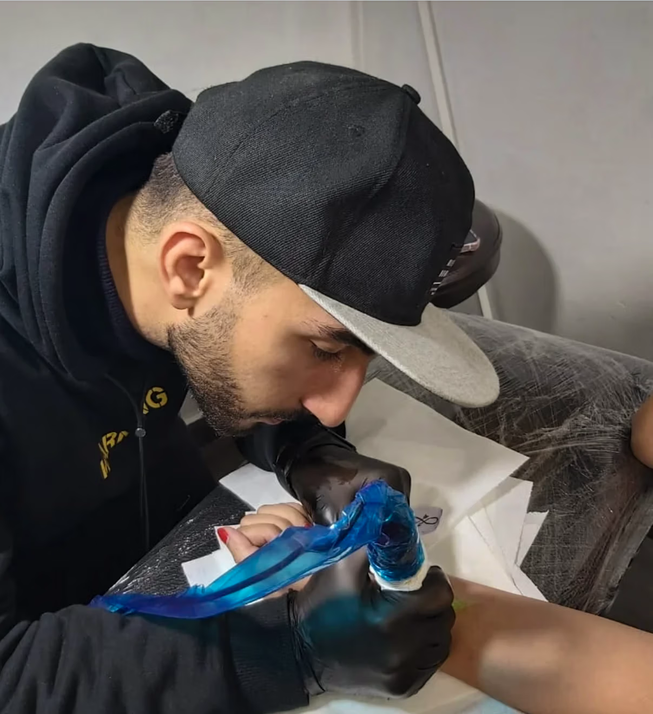

Send the idea
Tell us the placement, approximate size and what you want to make. Add reference images when they help explain the direction.
Custom tattooing in central Yerevan led by Arthur Barseghyan, founder and resident tattoo artist of Studio 14.
Studio 14 by Arthur is built first and foremost around professional tattooing. Every session is approached in a clean, controlled environment with professional equipment and quality materials, keeping the process focused on safety, precision and the finished result.
Arthur Barseghyan is the founder and resident tattoo artist of Studio 14. His core directions include blackwork, graphic and realism. The studio also hosts guest artists during the year, so the available range of styles can change with the current lineup.
Guest artists, current availability and fresh work are intentionally kept on Studio 14 Instagram so this website does not become outdated. Check @studio14.byarthur before a consultation or appointment.

Arthur founded Studio 14 and remains its resident tattoo artist. Tattoo requests for the studio are handled through him, from the first idea and references to the final session. For new projects and day-to-day work, his Instagram stays the most current source.
Tell us the placement, approximate size and what you want to make. Add reference images when they help explain the direction.
Studio 14 reviews the tattoo request and references before confirming the next step.
Leave your contact details and preferred date. Studio 14 will get back to you to confirm the session details.
A clear setup matters as much as the finished work. The tattoo workflow is presented through six practical steps, from fresh single-use needles to aftercare.
New sterile single-use needles or cartridges for each client.
Hand hygiene and a fresh pair of disposable gloves for the procedure; gloves changed when contamination risk requires it.
Procedure surfaces cleaned and disinfected and a fresh setup prepared between clients.
Equipment and surfaces touched during the session are covered with single-use barrier protection, replaced for every client.
Used needles are disposed of immediately in a dedicated container for safe needle disposal.
Clear written aftercare instructions and a way to contact the studio with healing questions.
Keep the aftercare guide handy. This link stays available whenever you need it.